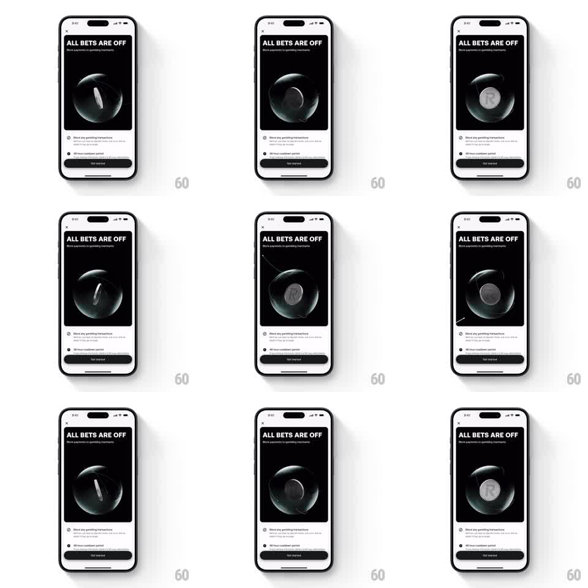

Media
Frame-by-frame

Rebuild this animation 1:1: Revolut's gambling-block hero - a dark glass sphere turns on itself, and as it rotates a metallic "R" emblem surfaces through the glass and catches the light.

Rebuild this animation 1:1: Revolut's gambling-block hero - a dark glass sphere turns on itself, and as it rotates a metallic "R" emblem surfaces through the glass and catches the light. ## Integration Integration: stack-agnostic spec - springs given as stiffness/damping, timed motions as duration + curve; map every value to your framework and animation library of choice. ## Scene Onboarding screen: "ALL BETS ARE OFF" title + subcopy, a black hero panel holding the sphere, bullet rows, Get started button. Motion lives only in the panel. ## Motion spec Pattern: glass sphere reveal loop, ~6s. - The sphere rotates slowly on its vertical axis (one turn ~6s, seamless loop), its glass surface refracting a faint environment. - The metallic R inside rotates with the sphere: it faces the camera once per revolution, catching a bright specular sweep as it passes front-center, then recedes into the dark glass. - Subtle caustic glints crawl the sphere's lower rim as it turns. - Text and buttons stay static. ## Calibration - The R must be clearly readable at front-center for a beat - if it never resolves, the hero has no subject. - Refraction and reflection stay subtle; a chrome ball reads as a different material. ## Reduced motion Static frame with the R at front-center and a slow sheen drift. ## Don't miss - The loop is perfectly periodic - the R's reappearance is the rhythm of the screen. - The panel background stays pure black; the sphere is the only light source.